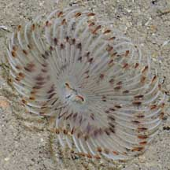
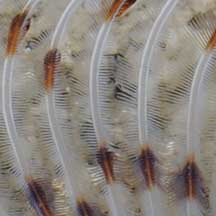
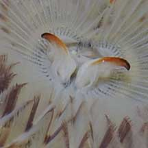

|
|
| worms text index | photo index |
| Tiny
sand fanworm awaiting identification* Family Sabellidae updated Sep 2019 Where seen? This tiny fanworm is sometimes seen on some of our shores, usually in silty sandy sheltered lagoons, often in small groups of 2-3 individuals near burrows. Features: On this page are included small fanworms with spots found in sandy areas. Fan about 1cm in diameter. The small fan is a single spiral, white with brown portions that result in a chevron banded pattern. Some are brownish with white spots. They are highly sensitive to disturbances and will disappear at the slightest sign of danger. |
 Sisters Island, Feb 10 |
 |
 |
*Species are difficult to positively identify without close examination.
On this website, they are grouped by external features for convenience of display.
| Tiny sand fanworms on Singapore shores |
On wildsingapore
flickr
|
| Other sightings on Singapore shores |